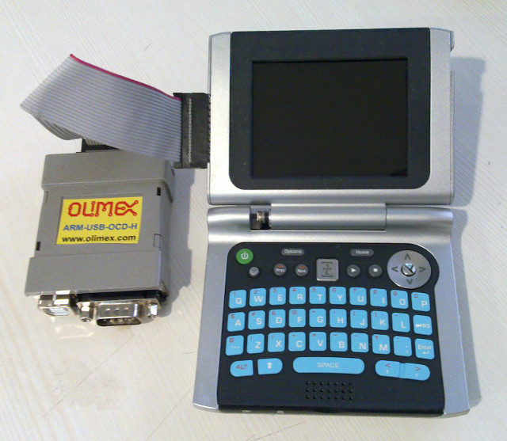

參考資訊：
http://sweetlilmre.blogspot.com/2010/08/zipit-z2-jtag.html?m=1
https://mozzwald.com/articles/using-a-raspberry-pi-as-a-jtag-debugger-to-recover-a-bricked-zipit
連接JTAG和Zipit Z2

$ cd
$ sudo apt-get update
$ sudo apt-get install openocd
$ vim olimex-arm-usb-ocd-h.cfg
interface ftdi
ftdi_device_desc "Olimex OpenOCD JTAG ARM-USB-OCD-H"
ftdi_vid_pid 0x15ba 0x002b
ftdi_layout_init 0x0908 0x0b1b
ftdi_layout_signal nSRST -oe 0x0200
ftdi_layout_signal nTRST -data 0x0100
ftdi_layout_signal LED -data 0x0800
adapter_nsrst_delay 0
jtag_ntrst_delay 200
reset_config trst_and_srst separate
adapter_khz 16
$ vim z2.cfg
jtag newtap pxa270 cpu -irlen 7 -ircapture 0x1 -irmask 0x7f -expected-id 0x49265013 -expected-id 0x79265013
target create pxa270.cpu xscale -endian little -chain-position pxa270.cpu
pxa270.cpu configure -work-area-phys 0x5c000000 -work-area-size 0x10000 -work-area-backup 0
flash bank pxa270.flash cfi 0x00000000 0x1000000 2 2 pxa270.cpu
$ sudo openocd -f olimex-arm-usb-ocd-h.cfg -f z2.cfg
Open On-Chip Debugger 0.9.0 (2018-01-21-13:43)
Licensed under GNU GPL v2
For bug reports, read
http://openocd.org/doc/doxygen/bugs.html
adapter_nsrst_delay: 0
Info : auto-selecting first available session transport "jtag". To override use 'transport select <transport>'.
jtag_ntrst_delay: 200
trst_and_srst separate srst_gates_jtag trst_push_pull srst_open_drain connect_deassert_srst
adapter speed: 16 kHz
Info : pxa270.cpu: hardware has 2 breakpoints and 2 watchpoints
Info : clock speed 16 kHz
Info : JTAG tap: pxa270.cpu tap/device found: 0x79265013 (mfg: 0x009, part: 0x9265, ver: 0x7)
$ telnet localhost 4444
Trying ::1...
Trying 127.0.0.1...
Connected to localhost.
Escape character is '^]'.
Open On-Chip Debugger
> reset halt
JTAG tap: pxa270.cpu tap/device found: 0x79265013 (mfg: 0x009, part: 0x9265, ver: 0x7)
Bad value '00' captured during DR or IR scan:
check_value: 0x02
check_mask: 0x07
JTAG error while writing DCSR
target state: halted
target halted in ARM state due to debug-request, current mode: Supervisor
cpsr: 0x180000d3 pc: 0x00000000
MMU: disabled, D-Cache: disabled, I-Cache: disabled
(processor reset)
> flash probe 0
Flash Manufacturer/Device: 0x0089 0x8865
configuration specifies 0x1000000 size, but a 0x800000 size flash was found
flash 'cfi' found at 0x00000000
> flash write_image erase unlock u-boot.bin 0
auto erase enabled
auto unlock enabled
wrote 131072 bytes from file u-boot.bin in 98.155098s (1.304 KiB/s)